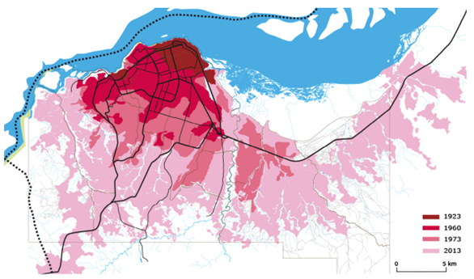

4 Week 4 - Policy
5 Kinshasa - using remotely sensed data to combat unsustainable urban growth
5.1 Summary
My city of choice is Kinshasa, Democratic Republic of Congo. Kinshasa is experiencing unprecedented population and urban growth, and, along with the effects of climate change, land use change as well as land degradation in the DRC as a whole, there is currently unsustainable urban growth in the city. Sustainable urban growth is needed to combat this issue. However, these problems must be understood and mapped first within the city.
Kinshasa is experiencing very high levels of population growth. It is a megacity with a population of 15 million, which is projected to increase to 27 million by 2035 (World Bank, 2021b). There are increasing effects of this. For example where population pressures are high in the city, service quality is very low, and water services especially are suffering. In terms of climate change, as the effects worsen, it is important for cities to become more resilient. Increased rainfall, disasters and adverse weather events are affecting crop yields and causing GDP loss.
The image below depicts the Kinshasa and Brazzaville area, which are neighbouring capital cities located along the banks of the Congo River. The Kinshasa metropolitan area is shown by the yellow box.
Kinshasa’s urban area has grown significantly in the last few decades which can be seen clearly in the image below.

The DRC’s economy relies heavily on agriculture, for both the population’s income and food source. This is being jeopardized by urban growth and changing land use. Forest degradation is also becoming more and more of an issue. Land is being degraded further and pollution is increasing due to mining, especially cobalt mining. Decreasing soil quality means that many rural areas are being abandoned for the city which is further contributing to unsustainable urban growth and land pressure (Shapiro, et al., 2021).
This is representative of wider issues in cities across the world, particularly in sub-Saharan Africa where population growth rates and urbanisation are high. Better tools are needed to understand the effects of these factors on issues such as food insecurity and service delivery. Additionally, more analysis is needed to understand where unsustainable urban development is occurring specifically in order to implement targeted sustainability policies to protect the environment and population in the future.
In 2021, the World Bank approved for $500 million to be used to support urban resilience and to expand services and opportunities in Kinshasa (World Bank, 2021a). The project is called Kin Eleda and aims to improve climate resilience and sustainable development through improved green spaces, reduced flood risk exposure and better water connections across the city, amongst other things. Implementing a policy to use remote sensing data to identify land use changes, urban growth, land degradation and climate change vulnerability can provide a useful tool to help to contribute to the Kin Eleda project’s goals.
This problem and addressing it directly also relates to the SDG targets including (UN, 2023):
11.3 - inclusive urbanisation and sustainability in cities, of which a sub-target, 11.3.1, addresses land consumption to population growth as an indicator
13.1 - resilience and adaptive capacity to climate-related hazards and natural disasters
15.3 - restore degraded land, which includes indicator 15.3.1 - degraded land divided by total land area
5.2 Applications
Key indicators of this problem which could be understood better are land degradation, land consumption rate including land cover change, and climate change. Adhikari, et al’s paper proposed indicators for sustainable city planning in Africa which have been successful in cities in other countries such as Burkina Faso, Kenya and Madagascar, and can be applied to Kinshasa (2022). The remotely sensed data needed would help to identify land consumption, climate change vulnerability and degraded land.
Climate change:
Risk classification and vulnerability assessment
With a loss of habitats, there is a higher risk of vulnerability
Allows for the local government to implement specific and targeted policies
Land degradation:
Soil erosion will reduce agricultural productivity
Increasing deforestation and bad agricultural practices occurring in the city and around the country
GEE and SEPAL - use 10m fine resolution data
Data needed may include indicators such as deforestation, conversion of cropland to settlements, conversion of grassland to cropland
Land consumption rate:
Expansion of urban areas versus population growth
Urban growth using Sentinel-2 data, population growth from WorldPop data
Incorporates land cover change
Land is being converted at a fast rate for livestock uses and to account for population growth. Many farmers are moving to the city due to loss of agricultural work in rural areas
There is currently a model (GLOBIOM) which represents land use competition. It is being applied to the DRC (Mosnier, et al., 2016)
These uses of remote sensing data can provide insight into where sustainable management and conservation is needed in the city. It is important to address pressures of climate change, population growth and land use changes in the city to provide more sustainable plans and targeted interventions to those high risk areas. This is especially important in the context of Kinshasa’s very high population growth rate.
More integrated and targeted approach needed - sustainability at the heart of the approach and solution
Prioritise areas for intervention - this will also help with urban planning and improved service delivery to these areas
The DRC has huge potential - it contains half of Africa’s forests, water resources, and has trillions of dollars of mineral resources - whilst the land degradation and other issues are alarming, reports argue that these changes are reversible (UNEP, 2017)
Incorporating remote sensing into sustainable urban policy will also help with climate resilience and adaptation
There are some limitations and considerations which must be accounted for by city planners when addressing this issue:
Funding limitations
Skills needed
Where to start? A specific sub-focus needed first?
Ensuring the city aligns with global policies
5.3 Reflections
Researching this policy area in Kinshasa has been a big learning point for me in this module as it has highlighted how remote sensing data can be used to address multiple factors in a city for a common goal. Urban growth and change is complex and it is clear that it is rare than only one issue can be focused on at once since they are all interconnected. The climate change aspect of this policy is really interesting to me as it is linked to my dissertation and I think risk assessments and identifying vulnerable areas will become more popular in the future especially where it might not be possible to apply policies to large areas due to resource and funding limitations. Population growth in Kinshasa is also very interesting since it is happening at such a high rate. I would like to research further into this issue and understand more about the specific plans that the country has to mitigate the effects of this - I wonder that as it is known that the population will increase so much, if they will try and encourage people to move elsewhere, or if the focus will be on improving development and infrastructure within the city to account these projections.
5.4 References
Adhikari, S., Koirala, P. et al. (2022) ‘Planning for Sustainable Cities in Africa: Experiences, Challenges and Prospects of Monitoring Geospatial Indicators’, Remote Sensing, 14
Guerin, T., Loury, M., et al., (2013) ‘Planification Urbaine: Kinshasa, racines et perspectives’, Groupe Huit, Kinshasa
Mosnier, A., Mant, R., et al. (2016) ‘Modelling Land Use Changes in the Democratic Republic of the Congo 2000–2030’, A report by the REDD-PAC project
Shapiro, A., Bernhard, K., et al. (2021) ‘Proximate Causes of Forest Degradation in the Democratic Republic of the Congo Vary in Space and Time’, Frontiers in Conservation Science, 2
United Nations (UN) (2023) ‘The 17 Goals’, available at: https://sdgs.un.org/goals (accessed: 10.3.23)
United National Environmental Programme (2017) ‘UNEP Study Confirms DR Congo’s Potential as Environmental Powerhouse but Warns of Critical Threats’, available at: https://www.unep.org/news-and-stories/story/unep-study-confirms-dr-congos-potential-environmental-powerhouse-warns (accessed: 10.3.23)
World Bank (2021a) ‘World Bank Approves $500 Million to Support Urban Resilience and Expand Access to Services and Opportunities in Kinshasa, DRC’, available at: https://www.worldbank.org/en/news/press-release/2021/03/30/world-bank-approves-500-million-to-support-urban-resilience-and-expand-access-to-services-and-opportunities-in-kinshasa (accessed: 10.3.23)
World Bank (2021b) ‘Why Kinshasa Could Be in the Vanguard of Megacities’ Climate Resilience’, available at: https://www.worldbank.org/en/news/feature/2021/08/19/why-kinshasa-could-be-in-the-vanguard-of-megacities-climate-resilience (accessed: 10.3.23)